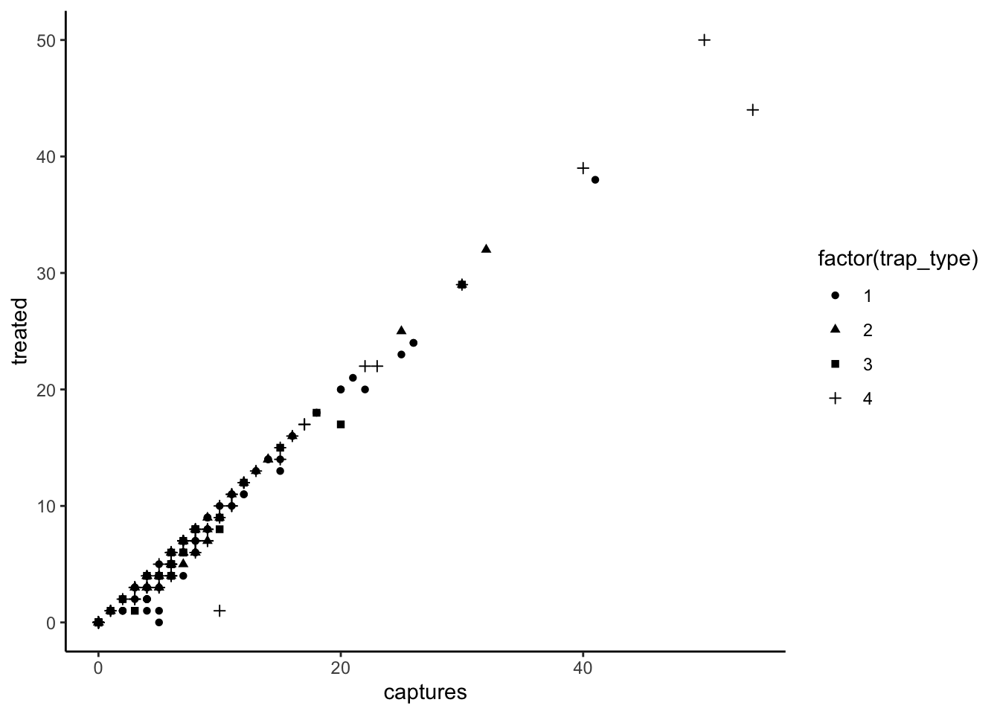
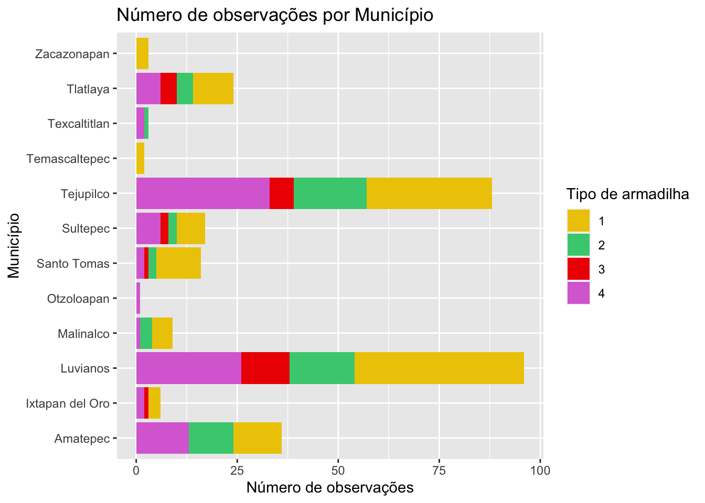
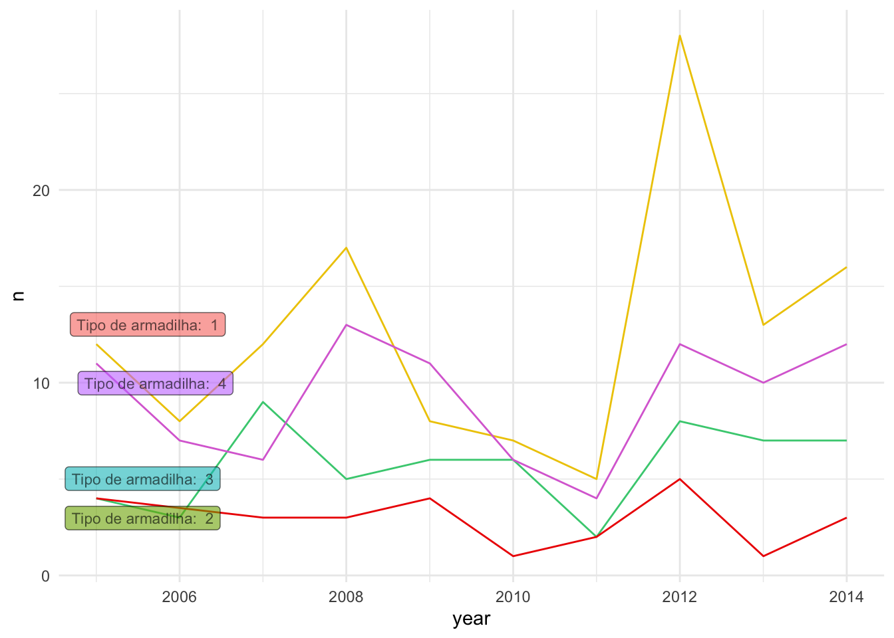
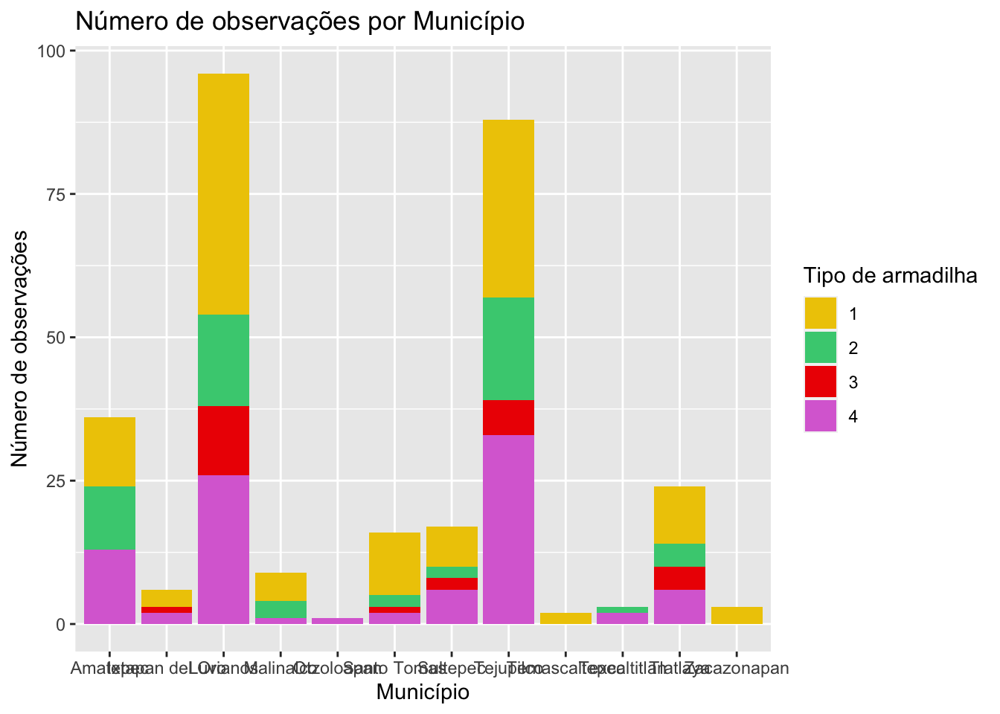
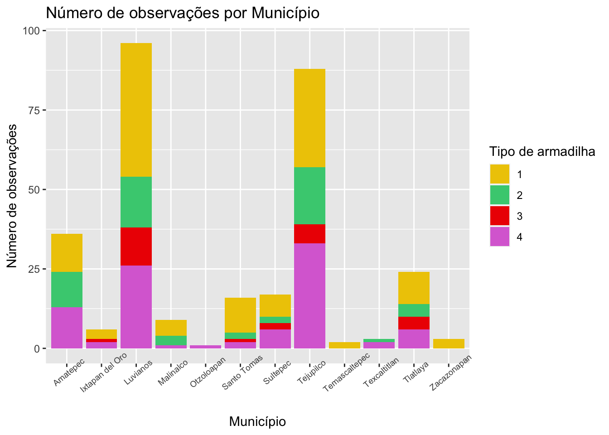

Customização adicional
Pablo Gomez
2023-07-05
Este laboratório continua o trabalho anteriormente feito para a Seção I, certifique-se de ter os objetos gerados na seção anterior.
1 Temas
O ggplot inclui a função theme() para
definir a maioria dos aspectos da figura, como a cor de fundo, a grade,
os eixos, a legenda, entre outros. Também existem vários temas
predefinidos (todos começam com theme_ seguido pelo nome do
tema) que você pode usar, se não quiser mexer em todos os argumentos da
função theme(). Por exemplo:
# todos os temas predefinidos começam com theme_
figures$heatmap <- figures$heatmap +
theme_classic2() + # Vamos usar o tema minimalista
coord_equal() # vamos definir as coordenadas como iguais para melhorar a proporção
figures$heatmap
2 Outras estéticas (aesthetics)
2.1 Forma
Existem outras estéticas que podemos definir, como cor, tipo de ponto, tamanho, entre outras. Vamos tentar mudar a forma do ponto para um dos gráficos que fizemos anteriormente:
figures$scatter <- captures %>% # os dados que estamos usando
ggplot() + # definimos o canvas
geom_point(aes(
x = captures, # eixo X
y = treated, # eixo Y
shape = factor(trap_type) # forma do ponto
)) +
theme_classic() # agora vamos usar o tema 'classic'
figures$scatter
2.2 Cor
tCaptures <- captures %>%
mutate(date = as.Date(date, "%d/%m/%y"), # Primeiro formatamos a data
year = lubridate::floor_date(date, 'year')) %>% # Em seguida, criamos uma variável formatando a data como mês do ano
count(year, trap_type) # Contamos o número de observações por mês
figures$timeseries <- tCaptures %>%
ggplot() +
geom_line(aes(x = year, y = n, col = factor(trap_type))) +
theme_minimal()
figures$timeseries
3 Personalização sem a função aesthetics
Até agora, adicionamos variáveis dentro de nossa função
aes(), mas podemos adicionar alguns argumentos fora da
função aes() que queremos que sejam aplicados para TODAS as
observações. Por exemplo, podemos alterar o tamanho e a transparência
dos pontos em nosso gráfico de dispersão, o que pode ser útil para ver
onde há mais sobreposição de observações:
figures$scatter <- captures %>% # os dados que estamos usando
ggplot() + # definimos o canvas
geom_point(
aes(x = captures, y = treated, shape = factor(trap_type)), # aesthetics
size = 2.5,
alpha = 0.2 # alpha definirá a transparência dos pontos
)
figures$scatter
Você pode alterar outros componentes da figura, como cor, forma,
tamanho, etc. Lembre-se de que tudo o que vai dentro da função
aes() dependerá das variáveis dos dados e o que fica fora
da função será aplicado para todas as observações.
4 Escalas
Como você percebeu, por padrão o R escolhe cores e formas específicas
para as variáveis que usamos para mapear nossa figura. As escalas no
ggplot2 são uma maneira de especificar as formas, cores ou
tamanhos usados nas figuras. Existem uma série de funções
(scales_*) onde * representa a estética que
queremos definir. Dependendo do tipo de variável para o qual você deseja
definir a escala, você selecionará a função correspondente.
4.1 Valores contínuos
Por exemplo, se quisermos alterar as cores para o preenchimento a
partir de uma variável contínua, podemos definir as cores para um
gradiente usando a função scale_fill_gradient().
figures$heatmap <- figures$heatmap + # Vamos usar nosso mapa de calor previamente definido
scale_fill_gradient(low = 'black', high = 'red') # usamos a função para definir as cores
figures$heatmap
4.2 Valores categóricos
Ao usar variáveis categóricas, definimos uma paleta de cores específica. Para isso, precisamos saber quantas categorias nossa variável tem. Por exemplo:
# Definimos uma paleta de cores
colpal <- c('gold2', 'seagreen3', 'red2', 'orchid')
# Criamos a figura
figures$bars <- figures$bars +
scale_fill_manual(values = colpal) # Sabemos que nossa variável tem 4 categorias, então definimos 4 cores
figures$bars
4.3 Como encontrar cores?
O R gerencia cores de três maneiras diferentes: por nome (ou seja,
‘red’), por valor RGB usando a função rgb() (ou seja,
rgb(1, 0, 0)), ou usando código
hexadecimal (ou seja, “#F00000”). Você pode obter uma lista completa
das cores nomeadas no R usando a função colors(), mas você
só poderá ver os nomes. Felizmente, alguém criou uma ferramenta que pode
nos ajudar a encontrar exatamente as cores que queremos: o addin
Colour Picker (Seletor de Cores). Addins são ferramentas
disponíveis no RStudio para facilitar tarefas, vamos experimentar o
colour picker (deve estar na sua barra de addins).
 Outros recursos para encontrar
cores incluem:
Outros recursos para encontrar
cores incluem:
- Gerador de paletas Coolors: Este site gera paletas de cores aleatórias e inclui outras paletas geradas pelos usuários.
- Verificador de contraste de cores: Este site possui uma ferramenta para verificar o contraste entre duas cores, o que pode ser útil ao definir rótulos e outras anotações em nossas figuras.
5 Rótulos
Normalmente, tentamos evitar espaços ao usar nomes para os nomes das
colunas, mas para os rótulos das nossas figuras, essa pode não ser a
maneira mais direta de comunicar nossa análise. Podemos definir rótulos
específicos para tornar nossos gráficos mais legíveis e
autoexplicativos. Vamos melhorar um pouco mais a figura do gráfico de
barras para torná-la mais clara, podemos usar a figura que criamos
anteriormente contida em nossa lista de figuras
figures$bars.
figures$bars <- figures$bars + # chamamos a figura criada anteriormente
labs(# usamos a função labs para gerar nossos rótulos
title = 'Número de observações por Município', # O título que daremos à nossa figura
x = 'Número de observações', # O rótulo para o eixo x
y = 'Município', # lrótulo para o eixo y
fill = 'Tipo de armadilha'
)
figures$bars
5.1 Rótulos dentro das figuras
library(ggrepel)
lab <- tCaptures %>%
group_by(trap_type) %>%
filter(year == min(year))
figures$timeseries <- figures$timeseries +
geom_label_repel(data = lab, aes(x = year, y = n, label = paste('Tipo de armadilha: ', trap_type), fill = factor(trap_type)), alpha = 0.6, size = 3) +
scale_color_manual(values = colpal) +
theme(legend.position = 'none')
figures$timeseries
6 Além dos temas básicos
Vamos supor que queremos inverter o eixo do nosso gráfico de barras
porque achamos que se encaixará melhor em nosso relatório. Podemos fazer
isso a partir da função aes() redefinindo os eixos, mas
neste caso usarei apenas a função coord_flip() para fazer o
mesmo.
figures$bars <- figures$bars + # chamamos a figura criada anteriormente
coord_flip() # Usamos essa função para inverter o eixo x e y.
figures$bars
Como você perceberá, há sobreposição entre o texto dos municípios e mal conseguimos lê-los. Podemos modificar a posição dos rótulos do eixo X para corrigir isso. Para fazer isso, precisamos modificar o tema.
6.1 Rótulos
A função theme() tem vários argumentos que você pode ver
em detalhes na documentação (ou usando a funcionalidade de preenchimento
automático no RStudio/posit.cloud). O argumento que precisaremos definir
é axis.text.x, o argumento aceita um tipo específico de
objeto usado para formatar o texto. Para criar esse objeto, usamos a
função element_text(). Isso fará mais sentido quando
tentarmos.
figures$bars <- figures$bars + # chamamos a figura criada anteriormente
coord_flip() + # Usamos essa função para inverter o eixo x e y.
theme(axis.text.x = element_text(angle = 40, size = 7))
figures$bars
6.2 Grade
Outras coisas que podemos alterar na função theme()
incluem o fundo da figura. Vamos fazer algumas alterações na grade e na
cor de fundo.
figures$bars <- figures$bars +
theme(
panel.grid = element_line(color = 'grey80'), # Alteramos a cor da grade
panel.grid.major.x = element_blank(),# Removemos a grade do eixo x
panel.background = element_rect(fill = 'mintcream') # Alteramos o fundo da figura
)
figures$barsSe você percebeu, ao definir os argumentos, utilizei diferentes
funções para os elementos usados (ou seja, element_blank(),
element_rect(), element_line()). Dependendo do
elemento do tema, você precisará definir o elemento apropriado para
usar, em resumo:
element_blank()é para elementos vazios (ou seja, quando você deseja removê-los)element_rect()é para geometrias preenchidas (ou seja, o fundo do painel ou da legenda)element_line()para linhas, como a gradeelement_text()para elementos de texto, como os rótulos
7 Exercício:
Agora, reserve um tempo para usar os recursos que discutimos para modificar a figura e seja criativo com as cores e o tema, talvez use a escala de cores do seu time de esportes favorito, personagem de um filme ou algo que você goste. Sinta-se à vontade para modificar qualquer uma das figuras que criamos anteriormente!